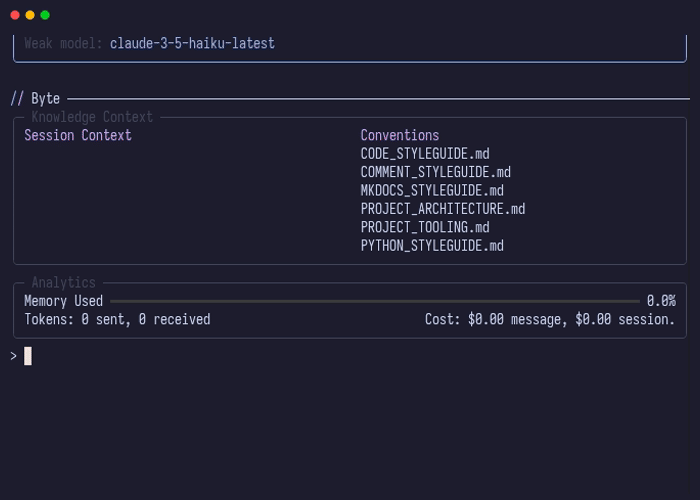

Commit
Byte's commit system uses AI to generate meaningful commit messages by analyzing your staged changes. It automates the entire commit workflow - staging files, running linters, generating commit messages, and handling git operations.

Quick Start
Create a commit:
Byte will:
- Stage all changed files (with confirmation)
- Run configured linters on changed files
- Prompt you to choose between Commit Plan or Single Commit
- Analyze the git diff with AI
- Generate commit message(s) based on your choice
- Create the commit(s)
Commit Types
Byte offers two approaches to organizing your commits:
Commit Plan
Analyzes your staged changes and intelligently groups related files into multiple logical commits. The Agent:
- Reviews all staged files and their diffs
- Groups related changes together (e.g., feature additions, bug fixes, refactoring)
- Generates a separate commit message for each group
- Creates multiple commits automatically
When to use:
- Large changesets with multiple logical changes
- Mixed feature work and bug fixes
- Changes spanning multiple domains or modules
Single Commit
Creates one commit for all staged changes with a single descriptive message. The AI:
- Reviews all staged files and their diffs
- Generates one comprehensive commit message
- Creates a single commit
When to use:
- Focused changes to a single feature or fix
- Small, cohesive changesets
- When you want manual control over commit boundaries
Error Handling
If a commit fails (for example, when pre-commit hooks modify files), Byte will:
- Display the error message
- Prompt you to stage the changes and try again
- Re-stage all changes if you confirm
- Retry the commit with the same message
This is common with pre-commit hooks that automatically format or modify files - the hooks run, change the files, and cause the commit to fail because the staging area no longer matches the working directory.
Configuration
Linting Integration
Control linting behavior via .byte/config.yaml:
lint:
enable: true # Disable to skip linting during commits
commands:
- command: "ruff format"
extensions: [".py"]
See Linting concept for detailed configuration.
Commit Message Format
The AI generates messages following conventional commit conventions for both commit types:
Structure
Types
Common commit types the AI uses:
- feat - New feature
- fix - Bug fix
- docs - Documentation changes
- style - Code style changes (formatting, whitespace)
- refactor - Code restructuring without behavior change
- perf - Performance improvements
- test - Test additions or modifications
- chore - Build process, tooling, dependencies
Examples
Simple feature:
Bug fix with scope:
Breaking change:
feat!: redesign authentication API
BREAKING CHANGE: AuthService.login() now returns a Promise
instead of synchronous result. Update all callers to use await.